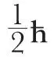
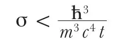

中文
中文H. Bethe and R. Peierls
Editor’s Note
Hans Bethe and Rudolf Peierls here discuss the implications of Wolfgang Pauli’s proposal that radioactive beta decay involves a hitherto unknown particle, the neutrino. If such a particle had small mass and spin 1/2, the continuous spread of energy of electrons emitted in beta decay would make sense, and energy and momentum conservation need not be abandoned for nuclear processes. They suggest that the neutrino is created at the moment of decay, and that a neutrino may initiate a reverse beta decay when impinging upon nuclei. However, by their estimates a neutrino should interact so weakly with other matter that observing the latter would be most unlikely. Indeed, they can see no way yet to observe a neutrino. 中文
THE view has recently been put forward1 that a neutral particle of about electronic mass, and spin

(where ћ=h/2π) exists, and that this “neutrino” is emitted together with an electron in β-decay. This assumption allows the conservation laws for energy and angular momentum to hold in nuclear physics2. Both the emitted electron and neutrino could be described either (a) as having existed before in the nucleus or (b) as being created at the time of emission. In a recent paper3 Fermi has proposed a model of β-disintegration using (b) which seems to be confirmed by experiment. 中文
According to (a), one should picture the neutron as being built up of a proton, an electron and a neutrino, while if one accepts (b), the rôles of neutron and proton would be symmetrical4 and one would expect that positive electrons could also sometimes be created together with a neutrino in nuclear transformations. Therefore the experiments of Curie and Joliot5 on an artificial positive β-decay give strong support to method (b), as one can scarcely assume the existence of positive electrons in the nucleus. 中文
Why, then, have positive electrons never been found in the natural β-decay? This can be explained by the fact that radioactivity usually starts with α-emission and therefore leads to nuclei the charge of which is too small compared with their weight. The artificial β-emission was found for two unstable nuclei (most probably N13 and P30) formed by capture of an α-particle and emission of a neutron, and therefore having too high a charge for their mass. 中文
A consequence of assumption (b) is that two isobares differing by 1 in atomic number can only be stable if the difference of their masses is less than the mass of electron and neutrino together. For otherwise the heavier of the two elements would disintegrate with emission of a neutrino and either a positive or negative electron. There will be only a limited region on the mass defect curve, probably at medium atomic weight, where such small differences are possible. In fact, neighbouring isobares have only been found with the mass numbers 87, 115, 121, 123, (187), (203), while isobares with atomic numbers differing by 2 are very frequent. In the first case, one of the two nuclei (Rb) is known to emit β-rays. In each of the last two cases one of the two isobares is stated to be exceedingly rare and its identification might be due to experimental error. The other three cases actually lie close together and have medium weight. A particular case of isobares are proton and neutron. Since all experimentally deduced values of the neutron mass lie between 1.0068 and 1.0078, they are certainly both stable even if the mass of the neutrino should be zero. 中文
The possibility of creating neutrinos necessarily implies the existence of annihilation processes. The most interesting amongst them would be the following: a neutrino hits a nucleus and a positive or negative electron is created while the neutrino disappears and the charge of the nucleus changes by 1. 中文
The cross section σ for such processes for a neutrino of given energy may be estimated from the lifetime t of β-radiating nuclei giving neutrinos of the same energy. (This estimate is in accord with Fermi’s model but is more general.) Dimensionally, the connexion will be
σ = A/t
where A has the dimension cm.2 sec. The longest length and time which can possibly be involved are ћ/mc and ћ/mc2. Therefore

For an energy of 2.3×106 volts, t is 3 minutes and therefore σ<10–44 cm.2 (corresponding to a penetrating power of 1016 km. in solid matter). It is therefore absolutely impossible to observe processes of this kind with the neutrinos created in nuclear transformations. 中文
With increasing energy, σ increases (in Fermi’s model3 for large energies as (E/mc2)2) but even if one assumes a very steep increase, it seems highly improbable that, even for cosmic ray energies, σ becomes large enough to allow the process to be observed. 中文
If, therefore, the neutrino has no interaction with other particles besides the processes of creation and annihilation mentioned—and it is not necessary to assume interaction in order to explain the function of the neutrino in nuclear transformations—one can conclude that there is no practically possible way of observing the neutrino. 中文
(133, 532; 1934)
H. Bethe and R. Peierls: Physical Laboratory, University, Manchester, Feb. 20.
References:
1. W. Pauli, quoted repeatedly since 1931, to be published shortly in “Rapports du Septième Conseil Solvay, Brussels”, 1933.
2. C. D. Ellis and N. F. Mott, Proc. Roy. Soc., A, 141, 502; 1933.
3. E. Fermi, La Ricerca Scientifica, 2, No. 12; 1933.
4. This point of view was first put forward by I. Curie and F. Joliot at the Conseil Solvay, 1933.
5. I. Curie and F. Joliot, Nature, 133, 201, Feb. 10, 1934.